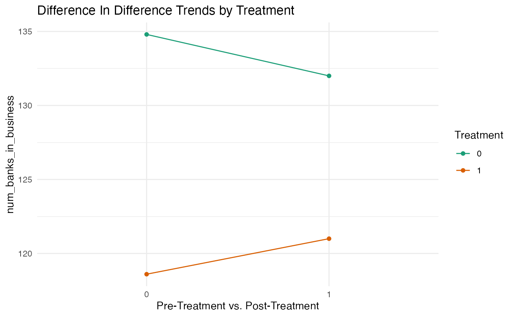

did.Rmdprovides functions which make basic Difference in Differences designs easy and quick. After specifying your model, the plot method for objects quickly creates trend lines, allowing you to visualise the results.
First we run the example code model.
fit <- qed_did("num_banks_in_business", "year", 1930, "bank_district", "6th district", df = banks)
#> Loading required package: dplyr
#>
#> Attaching package: 'dplyr'
#> The following objects are masked from 'package:stats':
#>
#> filter, lag
#> The following objects are masked from 'package:base':
#>
#> intersect, setdiff, setequal, union
summary(fit)
#>
#> Call:
#> lm(formula = num_banks_in_business ~ treatment * post, data = data)
#>
#> Residuals:
#> Min 1Q Median 3Q Max
#> -25.8 -16.6 -2.8 17.9 34.2
#>
#> Coefficients:
#> Estimate Std. Error t value Pr(>|t|)
#> (Intercept) 134.80 11.05 12.197 1.89e-06 ***
#> treatment -16.20 15.63 -1.036 0.330
#> post -2.80 27.07 -0.103 0.920
#> treatment:post 5.20 38.29 0.136 0.895
#> ---
#> Signif. codes: 0 '***' 0.001 '**' 0.01 '*' 0.05 '.' 0.1 ' ' 1
#>
#> Residual standard error: 24.71 on 8 degrees of freedom
#> Multiple R-squared: 0.1279, Adjusted R-squared: -0.1991
#> F-statistic: 0.3911 on 3 and 8 DF, p-value: 0.7628Next, we plot the trend lines for the treatment and control group from pre-treatment to post-treatment.
plot(fit)
#> Loading required package: ggplot2 The above graph allows us to visualise the disparity in differences between the treatment group and control group from one time period (i.e. pre-treatment) to the next time period (i.e. post treatment).